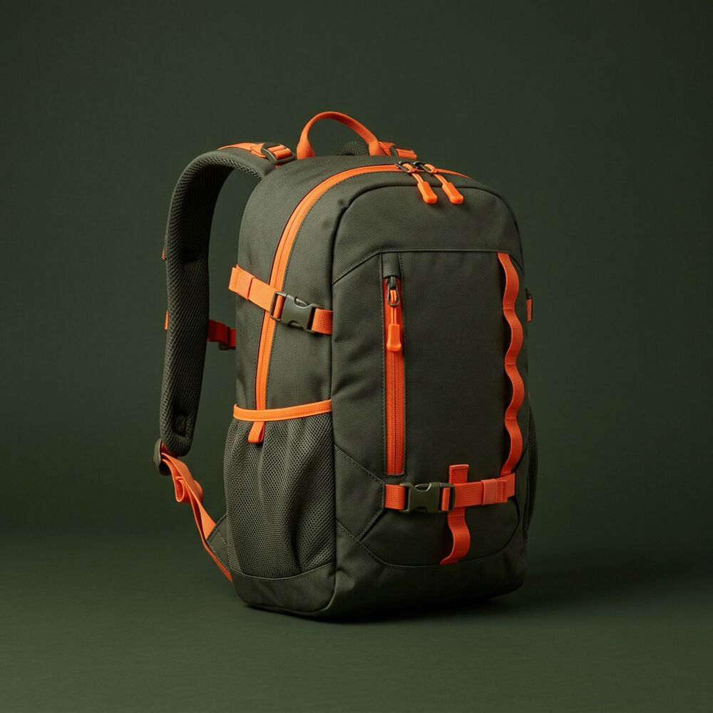

★★★★★
“Me pilló una tormenta en bici y el portátil salió seco. Vendida.”
Una mochila para toda la semana. Portátil el lunes, bocadillo y chubasquero el sábado.

Ruta está hecha de poliéster 600D reciclado con recubrimiento impermeable y cremalleras selladas. Dentro, una funda acolchada para portátil de hasta 16" y bolsillos para no perder nada.
Marca lo que sueles llevar y mira cuánto espacio te sobra en los 24 litros.
Te sobra mucho sitio.
| Ruta 24 L | Ruta 30 L | |
|---|---|---|
| Ideal para | Día a día y excursiones | Escapadas de fin de semana |
| Medidas | 48 × 30 × 18 cm | 52 × 32 × 20 cm |
| Portátil | Hasta 16" | Hasta 17" |
| Cabe en cabina | ✓ | ✓ |
| Precio | 89 € | 99 € |
“Me pilló una tormenta en bici y el portátil salió seco. Vendida.”
“Fui a Lisboa 4 días solo con la de 30 L. Entra en cabina y cabe todo.”
“Comodísima en la espalda incluso cargada. Los detalles naranjas le dan mucha vida.”
Aguanta lluvia intensa (IPX4). Para sumergirla o lluvias de horas, recomendamos una funda cubremochilas.
Sí, ambas medidas cumplen con las principales aerolíneas como equipaje de cabina.
Sí, correa de pecho ajustable y desmontable, además de cinturón lumbar opcional.
A mano con agua fría y jabón neutro. Déjala secar abierta y a la sombra.